实验 1: 安装配置虚拟机
Virtual Machine Installation and Configuration
一、实验目标
掌握VMware虚拟化软件的基础安装与配置方法。
学会在VMware中创建Ubuntu 20.04 LTS虚拟机，并完成系统安装。
理解虚拟机的核心概念（如硬件隔离、快照管理）及其在开发测试中的应用场景。
二、实验准备
硬件要求
物理机配置：建议16GB以上内存，并在安装前预留约40GB以上可用磁盘空间。虚拟机推荐配置为8GB内存、最大60GB可增长虚拟磁盘；不要勾选“立即分配所有磁盘空间”，宿主机只会按虚拟机实际写入量逐步占用空间。若宿主机磁盘空间确实不足，可将虚拟磁盘最大容量设置为20-30GB，并优先选择30GB和Ubuntu最小安装。课程期间应留意宿主机剩余空间，并只保留必要的初始快照和当前快照。
软件资源（从course-materials获取）
VMware Workstation Pro 16：course-materials/04_virtual_machine_resources/VMware-workstation-full-16.2.5-20904516.exe
Ubuntu 20.04 LTS Desktop版镜像文件：course-materials/04_virtual_machine_resources/ubuntu-20.04.6-desktop-amd64.iso
工具准备
任务管理器（查看物理机CPU核心数）。
文本编辑器（如记事本，用于记录虚拟机配置参数）。
Mac 用户补充方案
Intel Mac 用户可以继续使用本实验主流程中的 amd64 Ubuntu 20.04 Desktop 镜像，只需将虚拟机软件替换为 VMware Fusion、UTM 或 VirtualBox 等 macOS 可用工具。
Apple Silicon Mac（M1/M2/M3/M4）不能直接使用 amd64 桌面镜像，应使用 ARM64 Ubuntu 虚拟机。ARM64 镜像地址：
https://cdimage.ubuntu.com/ubuntu/releases/20.04.5/release/ubuntu-20.04.5-live-server-arm64.iso该镜像是 Ubuntu Server，默认没有图形界面。使用 VMware Fusion 创建虚拟机并启动后，按文本安装界面完成以下配置：语言选择 English，键盘保持 English (US)，网络使用 DHCP，镜像源保持默认，磁盘选择 Use an entire disk，创建用户名、主机名和密码；OpenSSH 可按需要勾选，其他附加软件包暂不选择。安装完成后选择 Reboot Now，如提示移除安装介质，请在虚拟机设置中断开 ISO 后回车继续。
首次登录命令行后，执行以下命令安装桌面环境和 VMware 工具：
sudo apt update
sudo apt install -y ubuntu-desktop open-vm-tools open-vm-tools-desktop
sudo reboot课堂建议
Apple Silicon 方案应作为补充方案使用，并在正式实验前完成 ROS Noetic、cfclient、课程仿真工程和 Crazyradio USB 透传测试。课堂主方案仍建议使用 x86_64 Ubuntu 20.04 Desktop 虚拟机，以保证环境一致。
三、实验步骤
阶段1：VMware软件安装
具体图文流程可直接打开以下网址：
https://leigongbiji.blog.csdn.net/article/details/130641288?fromshare=blogdetail&sharetype=blogdetail&sharerId=130641288&sharerefer=PC&sharesource=SteveZhang114514&sharefrom=from_link从course-materials安装
在course-materials中找到 course-materials/04_virtual_machine_resources/VMware-workstation-full-16.2.5-20904516.exe。
双击安装包，按向导提示完成安装（建议安装路径选择D盘）。
安装完成后，创建桌面快捷方式。
验证安装
启动VMware，检查主界面是否显示“创建新虚拟机”按钮。
阶段2：创建Ubuntu虚拟机
具体参考图文流程可直接打开以下网址：
https://blog.csdn.net/air_729/article/details/143105854?fromshare=blogdetail&sharetype=blogdetail&sharerId=143105854&sharerefer=PC&sharesource=SteveZhang114514&sharefrom=from_link新建虚拟机向导
打开VMware，点击“主页”→“创建新的虚拟机”
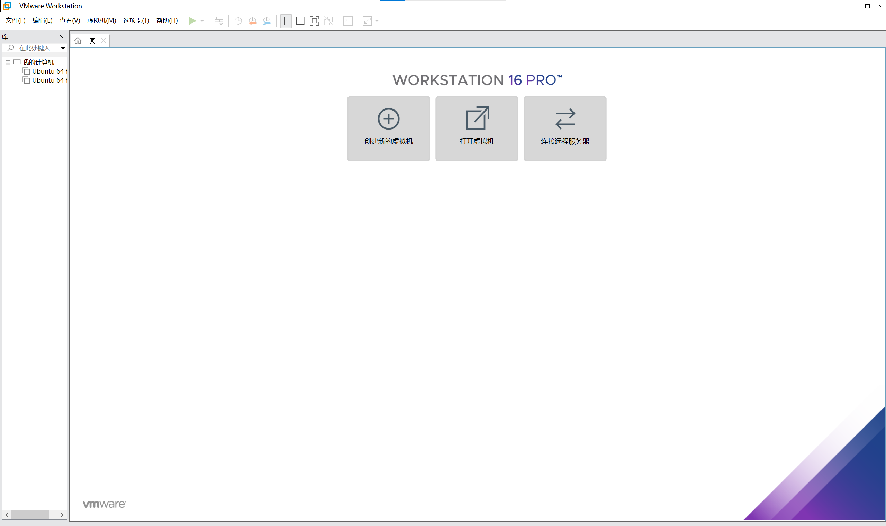
选择自定义（高级）点击下一步
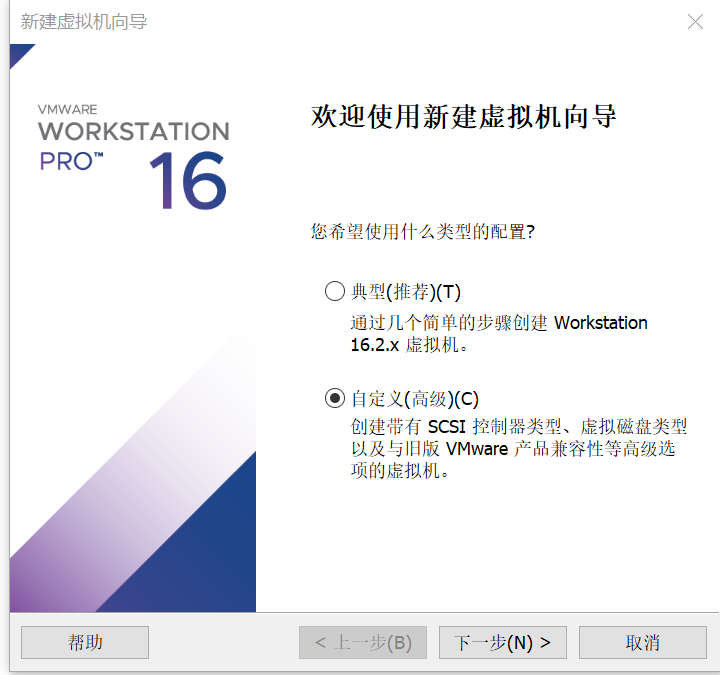
该界面直接选择下一步
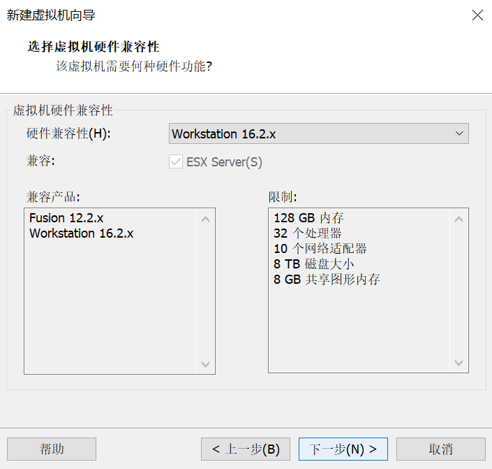
该界面中点击浏览，选择course-materials中的 course-materials/04_virtual_machine_resources/ubuntu-20.04.6-desktop-amd64.iso，点击下一步
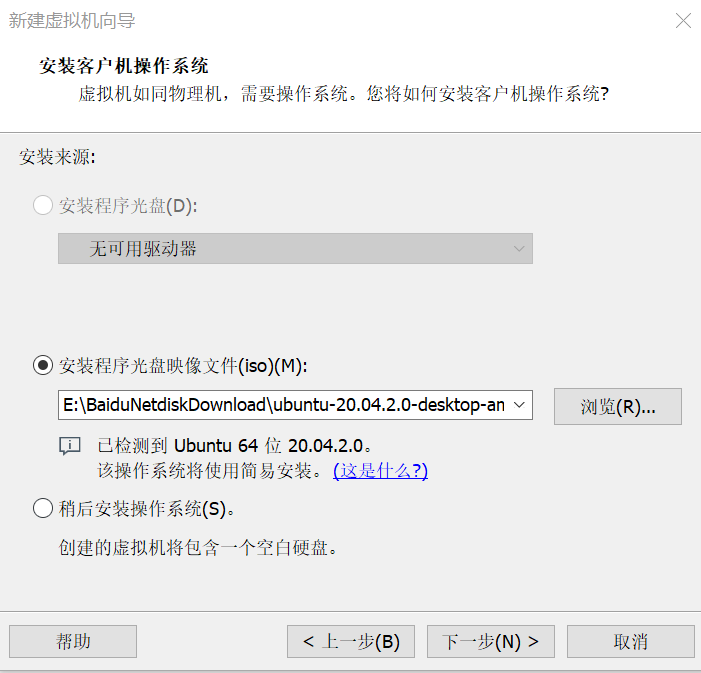
这一步中设置系统中的用户信息，建议密码统一用root，点击下一步
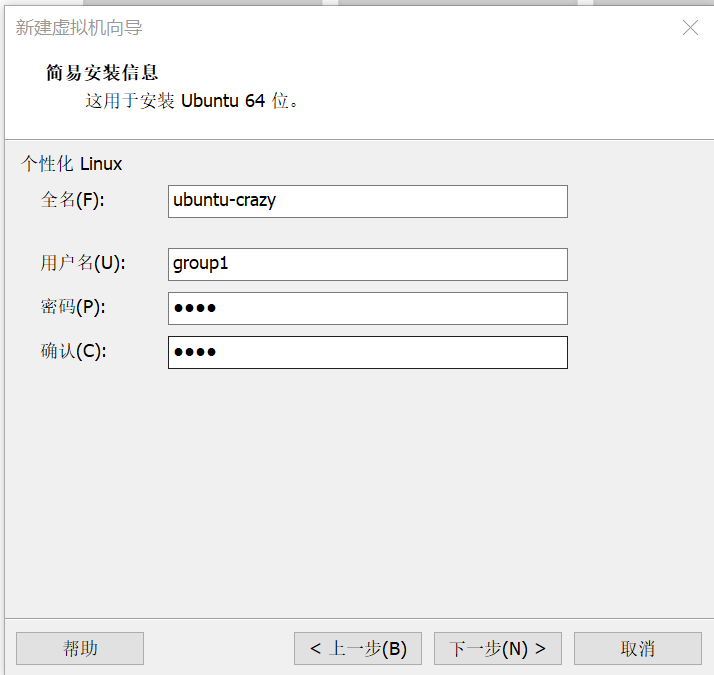
这一步中设置该虚拟机名称，所处位置可自定义也可使用默认路径，点击下一步
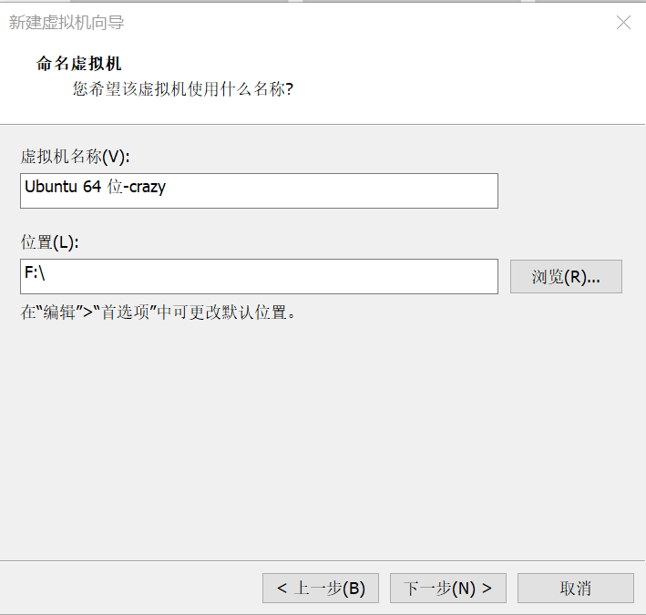
处理器数量以及内核数可以适量调整，可以按图示设置点击下一步
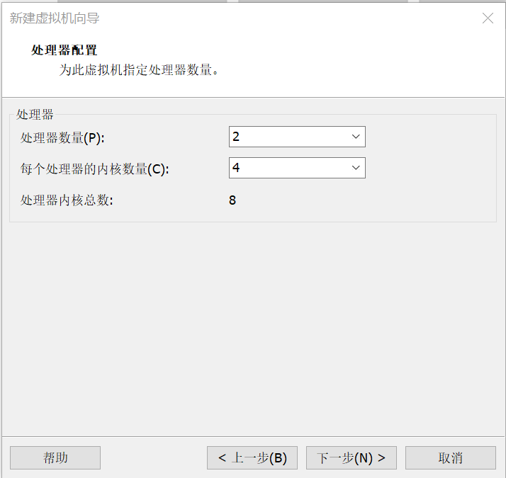
运行内存设置为8GB，设置完成后点击下一步
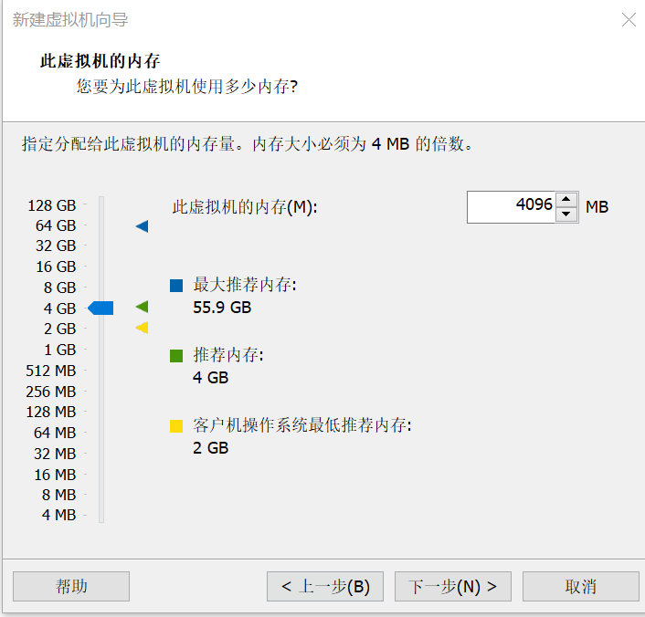
网络类型可使用默认配置，点击下一步
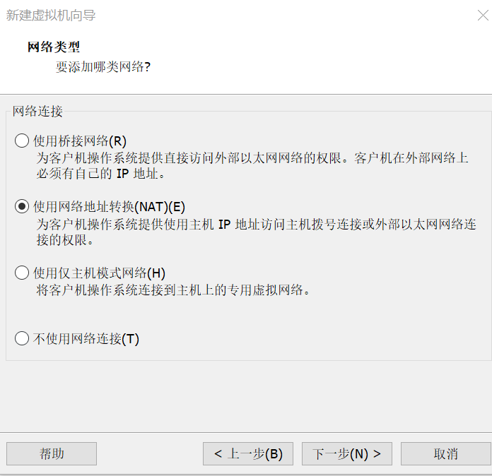
依然使用推荐控制器，点击下一步
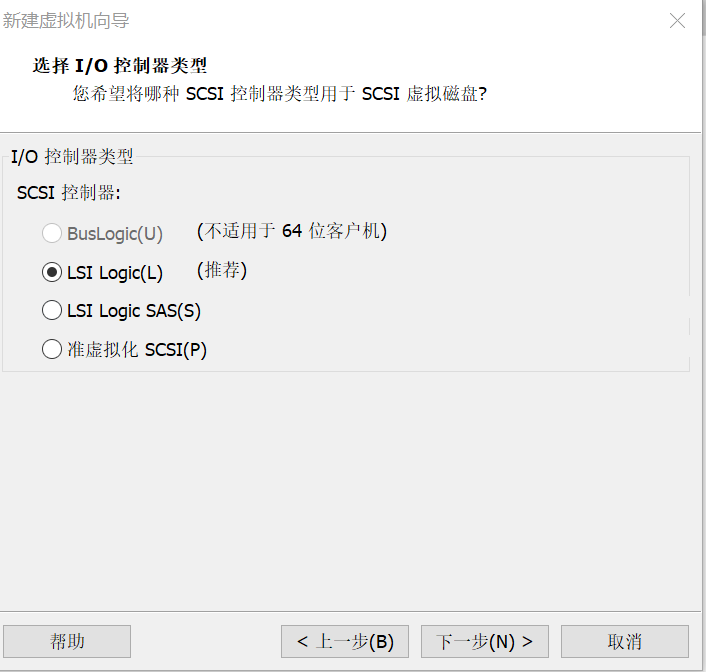
选择推荐磁盘类型，点击下一步
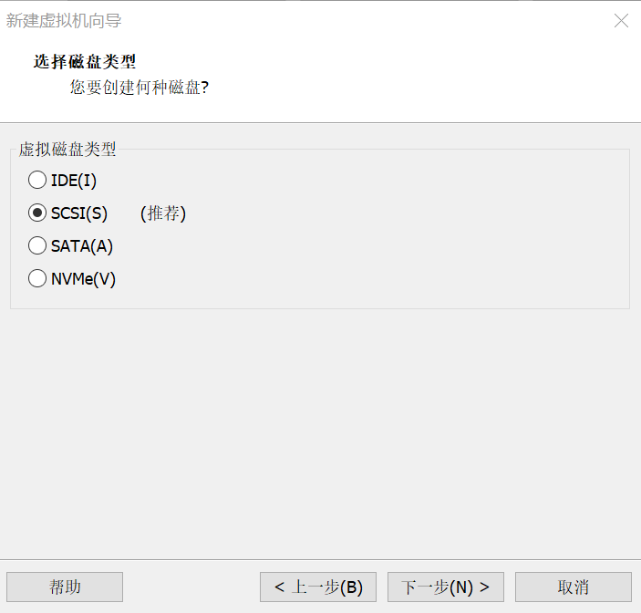
选择创建新虚拟磁盘，点击下一步
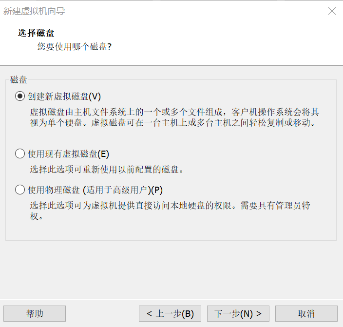
推荐将磁盘最大容量设置为60GB，不勾选“立即分配所有磁盘空间”，保持“将虚拟磁盘拆分成多个文件”即可。虚拟磁盘会按实际使用量增长，不会在创建时立即占用60GB；下图中的30GB用于展示设置位置。若宿主机空间确实不足，可设置为20-30GB，建议尽量选择30GB，并在课程期间避免安装无关软件和保留过多快照。设置完成后点击下一步。
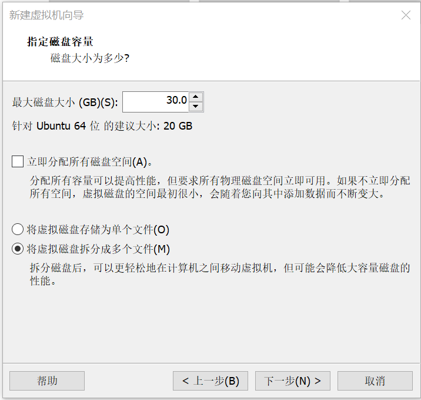
此页面直接点击下一步
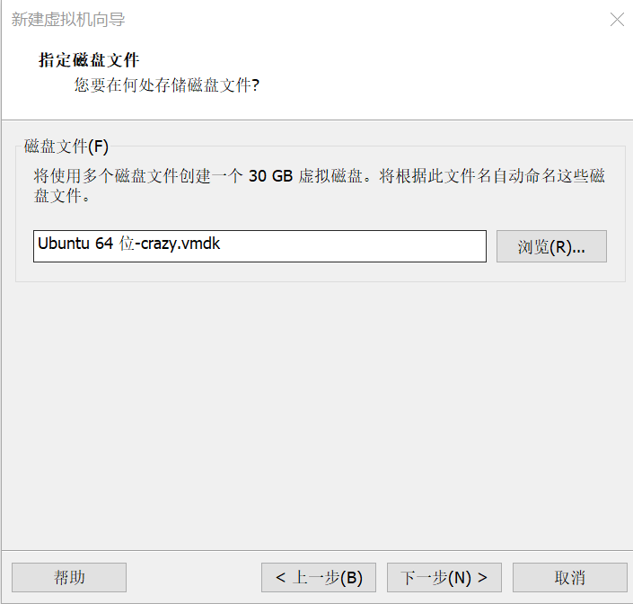
至此点击完成，虚拟机即自动创建完成
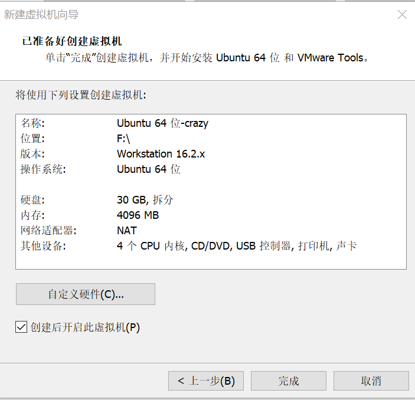
命名与存储
虚拟机名称：Ubuntu20.04_Test。
存储路径：选择D盘下新建的VMware_Ubuntu文件夹。
硬件配置
处理器：根据物理机核心数分配，建议至少分配4个虚拟CPU；高性能电脑可分配6-8个虚拟CPU，但应保留足够资源给宿主机。
内存：
统一配置：8GB
保留至少8GB内存给物理机。
磁盘：
类型：SCSI（推荐）
容量：推荐最大60GB；宿主机空间确实不足时可设置为20-30GB，并优先选择30GB。不立即分配全部空间，保持“将虚拟磁盘拆分成多个文件”即可。
网络：默认NAT模式（自动获取IP，可访问外网）。
加载ISO镜像
在虚拟机设置中，选择CD/DVD驱动器，加载course-materials中的 course-materials/04_virtual_machine_resources/ubuntu-20.04.6-desktop-amd64.iso。
阶段3：安装Ubuntu 20.04
启动虚拟机
点击“开启此虚拟机”，等待Ubuntu安装引导界面加载。
系统安装流程
语言选择：中文（简体）。
键盘布局：默认English（US）。
安装类型：选择“最小安装”（节省磁盘空间）或“正常安装”（含常用软件）。
分区设置：
选择“其他选项”，手动创建分区表。
分区方案：
/（根目录）：40GB，EXT4文件系统。
/home（用户目录）：剩余空间，EXT4文件系统。
Swap（交换分区）：4GB（内存不足时备用）。
上述分区方案适用于推荐的60GB虚拟磁盘。若采用20-30GB空间受限配置，请选择Ubuntu“清除整个磁盘并安装Ubuntu”进行虚拟磁盘自动分区，并选择最小安装；该操作仅作用于当前虚拟机的虚拟磁盘。不要在20-30GB虚拟磁盘上套用40GB根分区方案。
用户信息：设置用户名（如student）、密码（需牢记）。
安装完成：点击“重启”，移除ISO镜像后按Enter键。
系统初始化
登录后，根据提示跳过在线账号绑定和隐私设置。
调整任务栏图标：右键隐藏不常用应用，添加“终端”到收藏夹。
阶段4：虚拟机优化与快照管理
安装VMware Tools
在VMware菜单栏选择“虚拟机”→“安装VMware Tools”。
打开Ubuntu终端（在主界面同时按住ctrl+alt+T），执行以下命令：
此处一共有三行三条命令，分别输入完一条之后按回车执行命令。
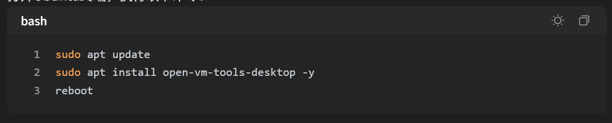
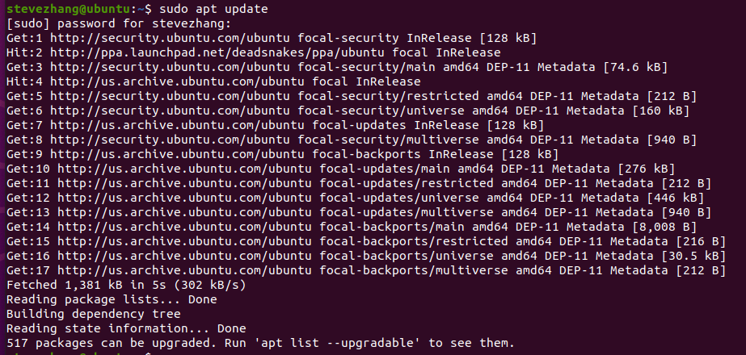
reboot命令之后虚拟机将会重启，虚拟机窗口将自动适配屏幕分辨率，并支持与物理机间的文件拖拽。
2. 创建快照
在VMware菜单栏点击“快照”→“拍摄快照”。
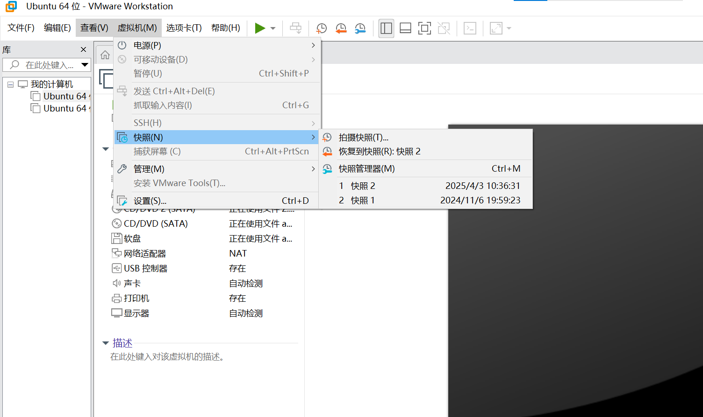
命名快照为Ubuntu20.04_Clean，备注“初始干净系统状态”。
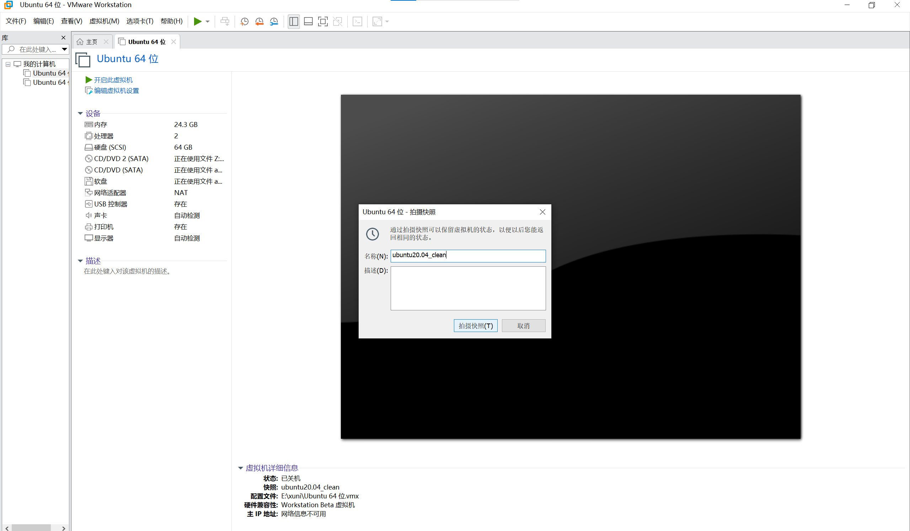
四、实验验证与测试
网络连通性测试
打开Ubuntu终端，执行：
观察是否能正常收到回复包。
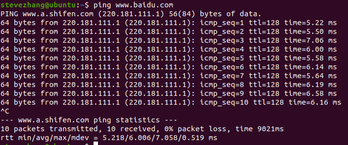
快照恢复测试
在VMware中右键虚拟机，选择“快照”→“恢复到快照Ubuntu20.04_Clean”。
确认系统恢复至初始状态。
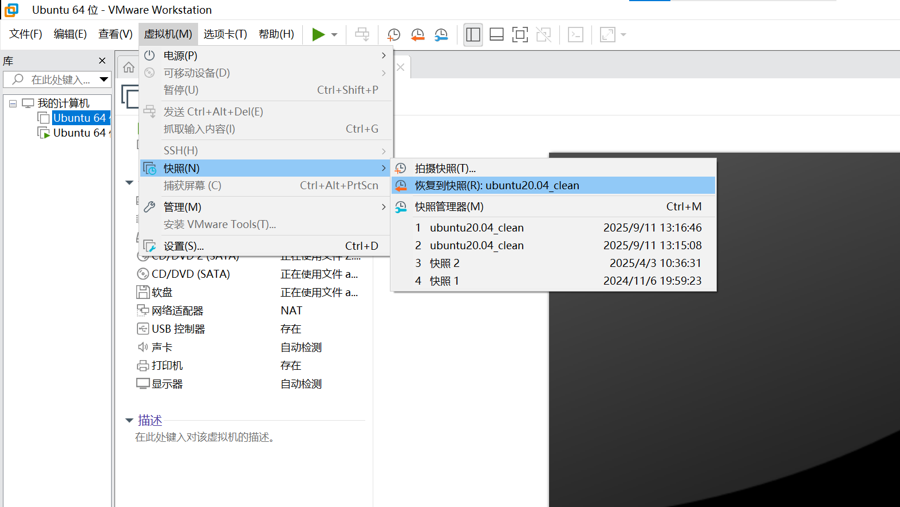
五、实验总结与拓展
核心知识点回顾
虚拟机通过软件模拟硬件，实现操作系统隔离。
快照功能可快速保存/恢复系统状态，适用于开发测试场景。
拓展任务（选做）
在虚拟机中安装Python3.10版本（可借助互联网）。
链接资料整理
本节将手册中出现的外部链接整理为离线可读要点。为避免材料过长，网页内容以课堂用途和关键提示形式归纳，原始 URL 保留供课后查阅。
- VMware Workstation 16 安装教程（网页标题：【虚拟机】VMware16保姆级安装教程-CSDN博客）
原始链接：https://leigongbiji.blog.csdn.net/article/details/130641288
课堂用途：辅助完成 Windows 主机上的 VMware 安装、授权、重启与首次启动检查。
- 适合作为虚拟机软件安装的图文参考，重点关注安装向导、许可协议、安装位置、增强键盘驱动和重启确认。
- 课堂操作以本手册步骤为准；网页内容用于遇到安装界面差异时对照。
- 安装后需确认 VMware 可以正常创建新虚拟机，并记录软件版本。
- VMware 中安装配置 Ubuntu（网页标题：VMware中安装配置Ubuntu（2024最新版 超详细）_vmware安装ubuntu-CSDN博客）
原始链接：https://blog.csdn.net/air_729/article/details/143105854
课堂用途：辅助完成 Ubuntu 镜像选择、虚拟机创建、系统安装和国内镜像源配置。
- 网页按照 VMware 创建虚拟机、选择 Ubuntu 镜像、配置 CPU/内存/磁盘、启动安装的流程展开。
- 课堂建议使用 Ubuntu 20.04 LTS；若网页示例版本不同，只参考操作路径，不直接替换课程版本。
- 安装后需验证系统可以进入桌面、终端可用，并建议保留初始快照。